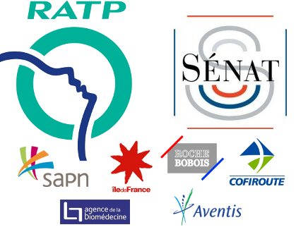

Maintenabilité des applications
Laurent Cottereau


Questions préliminaires
- Différence entre projet et maintenance ?
- Différents types de maintenance ?
- Différents types d'informatique ?
Informatique de Gestion
- métier complexe et non maîtrisé par le développeur
- ergonomie primordiale
- nombreux projets en parallèle
- architectures classiques
- performances peu critiques
La vie d'un nouvel arrivant
- correction d'un bug simple et livraison
- nouveau bug lié à une duplication de bug
- régression fonctionnelle
Remerciements
- Power Poligon
- Wordle
- F. Mathé